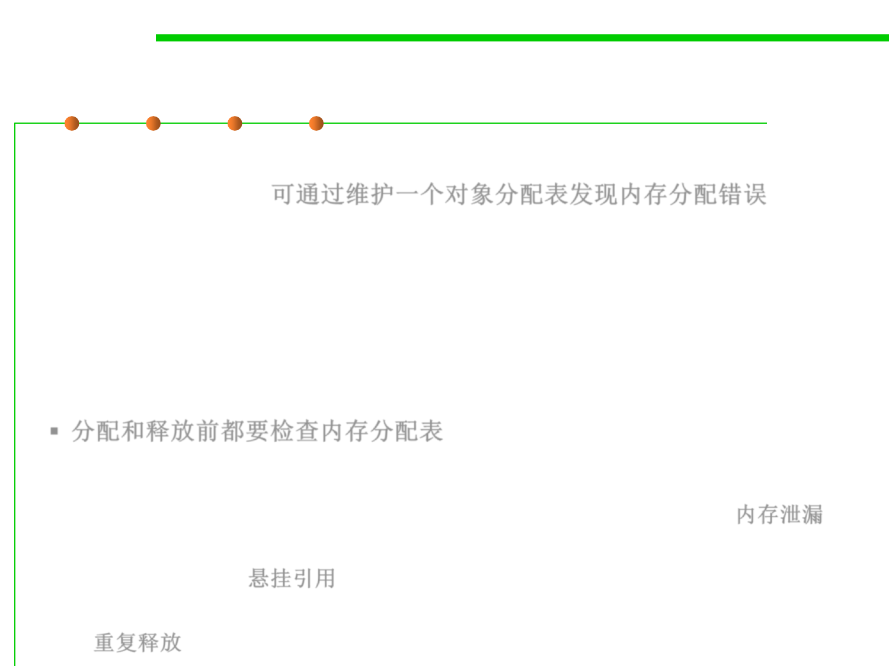

8.1 Metrics, Principles, and Methods of Construction for Performance
Monitoring Technique
▪ A simple mechanism to help find bugs is to maintain a table of
allocated objects. 可通过维护一个对象分配表发现内存分配错误
▪ Malloc() is replaced by a version that store the address of newly
allocated objects in a table.
▪ Free() is replaced by a version that checks the table before
freeing.
▪ 分配和释放前都要检查内存分配表
▪ Such monitoring can help find bugs:
– memory leaks (the table will fill with a particular type of object), 内存泄漏
– dangling references (the table can be checked to see, if a reference is valid
before using it) 悬挂引用
– double deallocations (free will protest if a non-allocated object is freed).
重复释放